福岡県 博多
辛子めんたいこ
極寒のベーリング海で獲れた海の恵み
粒感きわ立つ「真子」を老舗の職人が加工
ここが「極み」
- 延宝元年創業、福岡最古の酒蔵『大賀酒造』の清酒｢玉出泉｣を使用。
- 調味液に羅臼昆布、辛さの異なる２種の唐辛子、粗挽き唐辛子を混合。
そのまま食べるもよし、軽くあぶって食するもよし。ご飯のお供はもちろん、酒肴やおにぎり、お茶漬けの具材として人気の辛子めんたいこ。人気の食材だけに、お値段や品質も千差万別ですが、今回リンベルが「日本の極み」としてご提供するのは、創業60年にもおよぶ福岡の老舗めんたいこメーカーとのコラボにより生まれた、味わい品質ともに極上の「辛子めんたいこ」です。
原料のスケトウダラの卵の品質には徹底してこだわり、卵に一番張りのある時期の、キズや破れなどがない粒々感がある「真子」だけを使用して、２つの「極み」の味わいをご用意いたしました。
羅臼昆布をベースとした独自の漬けダレに、福岡最古の酒蔵「大賀酒造」が精魂込めて造った銘酒「玉出泉」の大吟醸をふんだんに使った、ふくよかな辛みが魅力の「辛子めんたいこ 大吟醸仕込」。
そして同じく「玉出泉」の純米酒と、福岡の柚子農家が丹精込めて育てた希少性の高い「福岡産の黄柚子」を加えた、上品な香りと辛みがついつい後を引く「辛子めんたいこ 柚子風味」。 お好みに応じて、単品またはセットからお選びください。
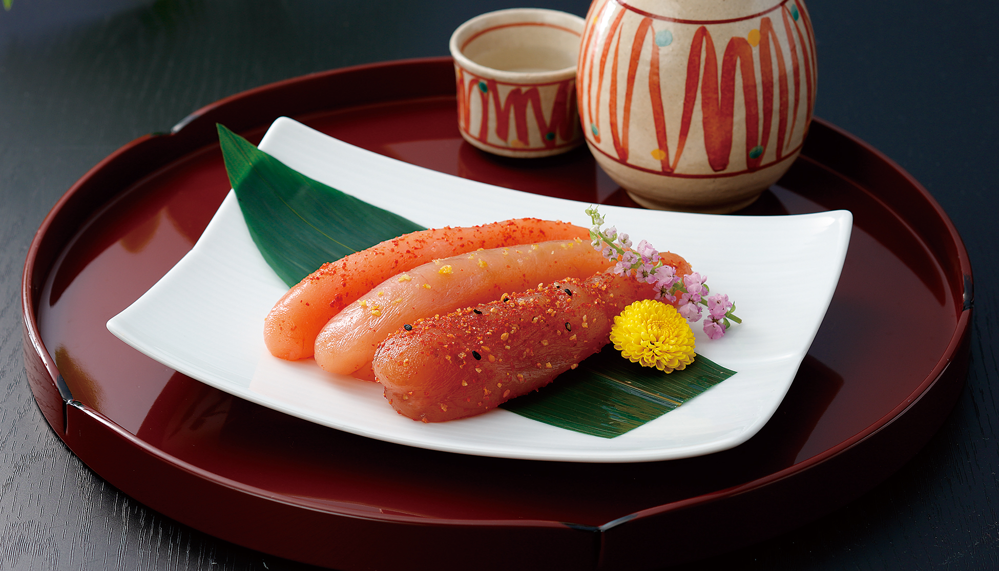
【博多辛子めんたいこ 大吟醸仕込】
福岡県酒類鑑評会で金賞を受賞した、「玉出泉」大吟醸を贅沢に使用
「極みの辛子めんたいこ 大吟醸仕込」の最大の特徴は、漬けダレに贅沢に使用する大吟醸酒が生み出す、まろやかな味わいと豊かな風味です。
「極みの辛子めんたいこ」がめざした「飽きのこないふくよかな味わい」を実現するため、味と風味に深みを生み出す、理想の漬けダレを追求するなかで、試行錯誤の末にたどりついたのが、この300年以上の歴史を誇る福岡最古の酒蔵「大賀酒造」が造る「玉出泉」の大吟醸でした。
昨今流行の、香りや甘みの強いタイプの日本酒とは異なり、飲み進めても飽きがこないことから「気軽に長く飲める大吟醸」ともいわれ、原料とする福岡産の山田錦が本来持つ「上品な甘さとほのかな香りを残しながら、やや辛口に仕上げられた「玉出泉 大吟醸」。その香りと味わいは、まさに「極みの辛子めんたいこ」が求めていた最高の素材だったのです。
独自のタレのレシピをベースに羅臼昆布、独自ブレンドの唐辛子、そしてこの「玉出泉」の大吟醸酒を加えて作られたオリジナルの「極み」の漬けダレが、厳選した真子にしみ込んだ「極みの辛子めんたいこ 大吟醸仕込」の奥深い豊かな味わいは、数ある辛子めんたいこの中でも別格の味。
仕上げにもこだわり、香り高い唐辛子を化粧辛子として振り掛けるなど、最高の辛子めんたいこを作るための細かな配慮が随所に施されています。
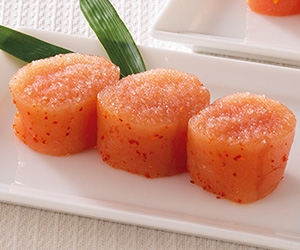
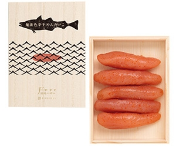
【博多辛子めんたいこ 柚子風味】
「福岡県産の黄柚子」が生み出す、爽やかな香りと味わい
朝晩の寒暖差が激しい、標高の高い山間部で栽培される爽やかな香りが特徴の九州産の柚子は、柚子胡椒や柚子味噌、柚子ポン酢など多くの加工品にも使われています。
柚子には青柚子と黄柚子がありますが、「極みの辛子めんたいこ 柚子風味」では、仕上がりにこだわり、色味が鮮やかで、香りがまろやかな福岡県産の黄柚子のみを使用。
めんたいこの香りづけにふさわしい、完熟直前の黄柚子の表皮だけを新鮮なうちに素早く手で剥きあげ、塩漬けなどをすることなく、無添加のまま冷凍保管。そうすることで鮮度と香りを守り、豊かな香りごと羅臼昆布と3種唐辛子の旨みたっぷりのオリジナルの漬けダレに混ぜ入れます。
この漬けダレに配合するお酒「玉出泉」も大吟醸だとお酒の香りと柚子の香りが干渉してしまうため、あえて純米酒を選択、さらに仕上げには表面に細やかな黄柚子の皮を化粧掛けするなど、柚子の香りを生かすための様々のこだわりが込められています。
こうして生まれた「極みの辛子めんたいこ 柚子風味」は、これまでの辛子めんたいこと一味違う、柚子の爽やかな香りと微かな酸味の後に感じる、控えめな辛さが後を引く上品な味わい。お酒のお供に、あたたかいご飯のおかずにも最適な逸品です。
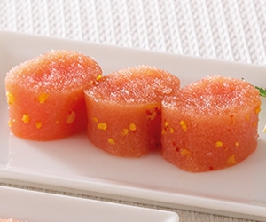
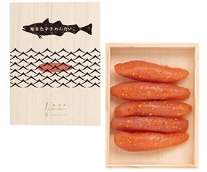
60年受けつがれる目利きの眼が厳選した、
新鮮なスケトウダラの真子だけを使用
めんたいことして使われるスケトウダラの卵は、新鮮さが命。
「極みの辛子めんたいこ」は、極寒の1月下旬から3月末にかけてベーリング海上で水揚げされた、産卵前のスケトウダラを船上で開腹し、取り出した卵巣を、そのまま急速冷凍したものを使用しているので、鮮度は折り紙つき。解凍の際も卵の旨みが流れ出ることを防ぐため、専用の解凍機を使ってゆっくりと行うことで、味わいも鮮度も市販品とは全く異なる、本物の味わいがお届けできるのです。
またスケトウダラの卵巣はとてもデリケートなので、腹から取り出す際や加工の際に皮が切れたり破れたりしてしまい、その多くは「切れ子」や「ばら子」という形で加工販売されますが、「極みのめんたいこ」では、キズや破れがない、ふっくらとした美しい卵巣のままの「真子」と呼ばれるものから、大粒卵のものだけを厳選しています。この極上の卵を辛みと旨みあふれるこだわりの漬けダレに漬け込まれることで、はらりと口中でほぐれ、プチプチとした食感とともに広がる、その味わいに他のめんたいことは大きな違いを生み出すのです。
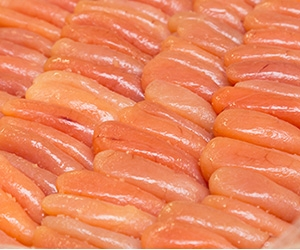
辛さの異なる3種類の唐辛子を配合した、
羅臼昆布と上質な酒を使った独自の漬けダレ
成熟したスケトウダラの卵のプチプチとした食感、豊かな香りと旨み、心地よい辛さが魅力の「極みの辛子めんたいこ」。
様々なめんたいこ作りを手掛けてきた老舗の匠が、この「極みのめんたいこ」ならではの味わいを生み出すために、厳選した大粒の美しい真子の次にこだわったのが、良質な素材そのものの味わいを引き出す漬けダレの配合でした。
60年にもおよぶ歴史が誇る独自のレシピをベースに、旨みを高める上質な羅臼昆布のダシ、そして味にふくらみを与えるために試行錯誤を重ねたどりついた、福岡最古の酒蔵が造る日本酒を、それぞれのめんたいこに合わせ銘柄を使い分けて配合しました。
さらに、辛子めんたいこの風味の決め手となる唐辛子にも徹底的にこだわり、ただ辛味だけを追うのではなく、漬けダレのベースとなる羅臼昆布のダシと合わさったときに、めんたいこ自身にしっかりとした旨みと辛みが浸透する漬けダレ作りを追求。国産の粗挽き唐辛子に加え、辛み成分である“カプサイシン”の含有量が異なる２種類、あわせて３種の唐辛子を厳選し絶妙なバランスでブレンドすることで、従来の商品に比べて辛すぎず、そのままでも美味しく召し上がっていただける、この「極みのめんたいこ」ならではの味わいを生み出しました。
こうした素材選びから、漬けダレの調合、漬け込みへの徹底的なこだわりの積み重ねによって作られるのが、卵そのものの旨みはもちろん、一粒一粒にしみ込んだ辛さ控えめな、芳醇な香りと、豊かな味わいを持つ「極みの辛子めんたいこ」シリーズです。
お酒の肴やお茶請けとしてはもちろんのこと、炊きたてアツアツのごはんに合わせたときの味わいはまた格別です。お子さまからご年配の方まで、どなたにもおいしく召し上がっていただける、まさに「極み」の味わいです。
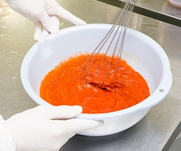
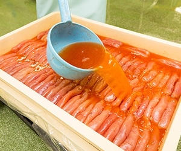
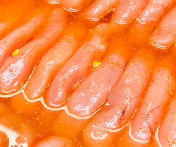
極みのこだわりポイント：日本酒
「飲み飽きない日本酒」を隠し味にする「食べ飽きない」味へのこだわり
古くから「“良い水”が出るところには造り酒屋がある」といわれてきたように、おいしい日本酒を造るためには、“良い水”が欠かせません。福岡県二日市の地で300年以上に渡って酒を造り続けてきた「大賀酒造」では、1673年の創業当初から、敷地内の井戸から湧き出る宝満山の伏流水を「日本酒の仕込み水」として使用してきました。
霊峰としても知られる宝満山の伏流水は、福岡県を代表するわき水としても名高く、非常に良質なため、「大賀酒造」では、他の酒蔵から水を分けて欲しいと請われることも多々あったそうです。
「一口飲んで満足するのではなく、ふたくち、みくち･･･と飲み続けたくなる“飲み飽きない”綺麗な味わいの酒を造りたい」という思いのもと、この宝満山の伏流水をふんだんに使い、品質と味わいにこだわり、杜氏、蔵人が丹精込めて、今もそのほとんどの工程を昔ながらの手作業で行うことで造られる「大賀酒造」の酒は、福岡県酒類鑑評会や全国新酒鑑評会で数々の賞を受賞。全国の日本酒好きや、日本酒の専門家からも高い評価を得る銘酒です。
「玉出泉」は、その「大賀酒造」の代表格ともいえる清酒で、太宰府天満宮の“直会（なおらい＝神前にお供えしたものを頂戴し神様のお力を頂く行事）”にも使われている、まさに福岡伝統の味。米本来が持つ上品な甘さとほのかな香りを特徴とする、近年流行している、香りや甘みが強い日本酒とは一線を画した、日本酒の“本流”ともいえる酒。
この香りと味わいにこだわった「玉出泉」の大吟醸酒、純米酒のそれぞれの特徴を最大に生かした使い分けを行うことで、2つの「極み辛子めんたいこ」の食べ飽きることのない、深みある、まろやかな旨みが生まれるのです。
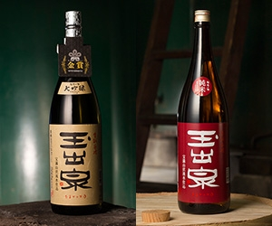
極みのこだわりポイント：柚子
黄柚子の表皮2～3mmが生み出す爽やかな香りと味わいのへのこだわり
「極みの辛子めんたいこ 柚子風味」で使用している柚子は、爽やかな香りが特徴の福岡産柚子。柚子は、収穫時期と完熟具合によって大きく「青柚子」と「黄柚子」に分けられますが、「極みの辛子めんたいこ 柚子風味」では、めんたいこの香りづけに最も適した、まろやかな香りと風味を兼ね備えた、完熟する一歩手前、皮の色が“青緑色”から“黄色”に変わったタイミングの「黄柚子」のみを使用。
収穫された黄柚子は、香りや風味を逃さないよう、新鮮なうちに手作業で皮むきした後、すり潰し、オリジナルの漬けダレに混ぜ入れますが、ここで使用しているのは、黄柚子の表皮2～3mmの部分だけ。めんたいこそのものの味わいとのバランスにこだわり、柚子の香りや風味を美味しく楽しんでいただくための試行錯誤を繰り返し、たどりついたのが、この厚みなのです。
福岡産柚子の爽やかな香りとほのかな酸味が加わることで生み出される、風味豊かな一味違う「極みの辛子めんたいこ 柚子風味」の味わいを是非お試しください。
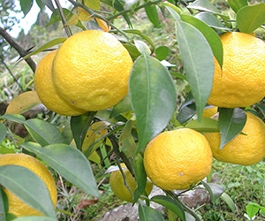
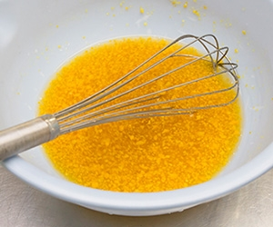
レビュー
開封から味わいまで、
美食の専門家が徹底レビュー！
「辛子明太子ってどれも同じじゃ？」というのが、私の誤解だった
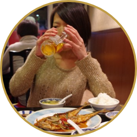
グルメライター猫田しげる さん
-
木箱入りで高級感があります。デザインもおしゃれ
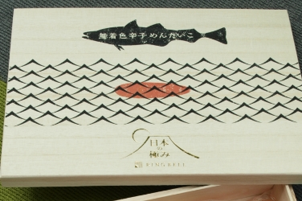
-
一房が大きくて、ずっしりしています。指で掴むとはちきれそうな弾力感を感じます。
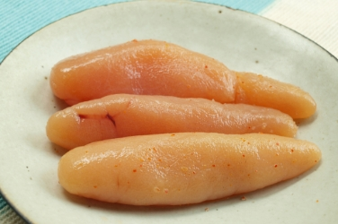
-
もちろん！ご飯にのせます。ご飯も「乗せてくれてありがとう」と喜んでいる気がします
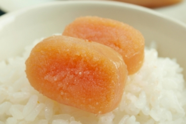
-
芳醇な旨みと爽やかな辛さ。特筆すべきはプチプチ感。
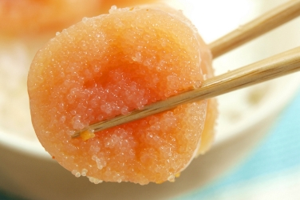
口当たりよくどんどん食べてしまいます。辛いめんたいこが苦手な人でも
食べられそうな味です
フードコーディネーター佐々木沙恵子 さん
-
モダンでスタイリッシュなパッケージがギフトにぴったりで可愛いですね。
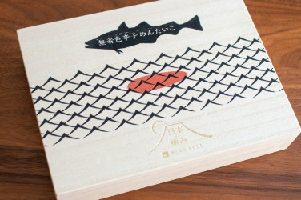
-
そのまま食べるだけでもじゅうぶん美味しいです
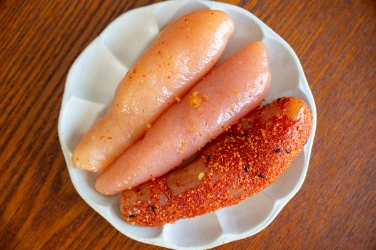
-
さっと簡単に作れるお酒にあうアレンジレシピを考えました。
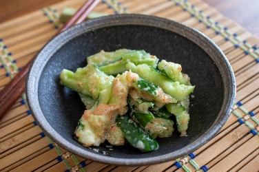
-
ごはんをおにぎりに変えるだけでいつもと少し気分が変わり、お店の気分に。
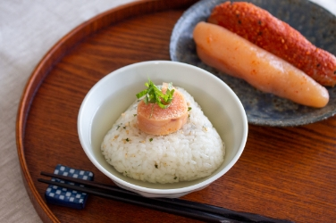